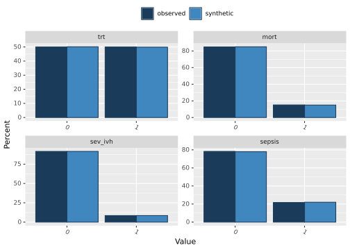

2 Generate Pseudo Data
In the final section of this presentation we will walk through a proposal that
pretty much all trial data can and should be turned into portable pseudo data
that is shared freely without restrictions. We has originally planned to show
two versions of this: one using {synthpop} and the other using {mvProbit}.
After reviewing the synthpop documentation more closely however it looks like
you can actually just save the model objects which means you can interact with
them using local data. This is much faster/more general than the multivariate
probit approach so we won’t move that work forward any further. Note that this
repository also includes the code necessary to do a bayesian version of the
multivariate probit model which is primarily of interest if you’d like to do
something like specify treatment effects across binomial outcomes as
shared/exchangeable.
2.1 Generate data from synthpop
We will use vanilla default settings for synthpop since the data here is simulated
but in real applications there is a lot more fine tuning available. We can get
a nice simple default output compare synthetic to original data using the compare
function.
data("ex_dat")
dat <- as.data.frame(ex_dat) %>% dplyr::select(trt, mort, sev_ivh, sepsis, cld, nec)
set.seed(124)
synth_dat <- xfun::cache_rds({
syn(dat, minnumlevels = 5, m = 10, models = FALSE, method = "parametric")
}, dir = cache, file = "synth_dat.rds")
compare(synth_dat, data = dat)##
## Comparing percentages observed with synthetic
##
## $trt
## 0 1
## observed 50.00000 50.00000
## synthetic 50.13333 49.86667
##
## $mort
## 0 1
## observed 84.88889 15.11111
## synthetic 85.05185 14.94815
##
## $sev_ivh
## 0 1
## observed 91.55556 8.444444
## synthetic 91.54074 8.459259
##
## $sepsis
## 0 1
## observed 78.29630 21.70370
## synthetic 77.97778 22.02222
## Press return for next plot: $cld
## 0 1
## observed 60.29630 39.70370
## synthetic 59.91111 40.08889
##
## $nec
## 0 1
## observed 95.70370 4.296296
## synthetic 95.22222 4.777778We can also take a quick look at correlations for a pooled version of the synthetic datasets vs the observed data.
## mort sev_ivh sepsis cld nec
## mort 1.0000000 0.10174852 0.11359478 -0.11996149 0.11452450
## sev_ivh 0.1017485 1.00000000 0.08190459 -0.02053963 0.02425813
## sepsis 0.1135948 0.08190459 1.00000000 0.10765597 0.01337243
## cld -0.1199615 -0.02053963 0.10765597 1.00000000 0.05132358
## nec 0.1145245 0.02425813 0.01337243 0.05132358 1.00000000## mort sev_ivh sepsis cld nec
## mort 1.0000000 0.11732436 0.11401142 -0.12256408 0.11459764
## sev_ivh 0.1173244 1.00000000 0.10506595 -0.03409620 0.01448092
## sepsis 0.1140114 0.10506595 1.00000000 0.09426759 0.01251141
## cld -0.1225641 -0.03409620 0.09426759 1.00000000 0.05205256
## nec 0.1145976 0.01448092 0.01251141 0.05205256 1.00000000For the rest of the presentation we will just use on example dataset. For the comparison at the end we will create a composite with sev_ivh + cld
pres_dat_syn <- synth_dat$syn[[10]] %>%
mutate_all(~ as.numeric(as.character(.))) %>%
mutate(cld_ivh = ifelse(sev_ivh == 1 & cld == 1, 1, 0),
cld_no_ivh = ifelse(cld == 1 & sev_ivh == 0, 1, 0),
ivh_no_cld = ifelse(cld == 0 & sev_ivh == 1, 1, 0))
pres_dat <- dat %>%
mutate(cld_ivh = ifelse(sev_ivh == 1 & cld == 1, 1, 0),
cld_no_ivh = ifelse(cld == 1 & sev_ivh == 0, 1, 0),
ivh_no_cld = ifelse(cld == 0 & sev_ivh == 1, 1, 0))
colMeans(pres_dat)## trt mort sev_ivh sepsis cld nec cld_ivh cld_no_ivh ivh_no_cld
## 0.50000000 0.15111111 0.08444444 0.21703704 0.39703704 0.04296296 0.02888889 0.36814815 0.05555556## trt mort sev_ivh sepsis cld nec cld_ivh cld_no_ivh ivh_no_cld
## 0.51703704 0.15111111 0.08592593 0.21333333 0.38592593 0.04962963 0.03629630 0.34962963 0.04962963Overall just taking even a single dataset we’ve done pretty good at replicating the original data.